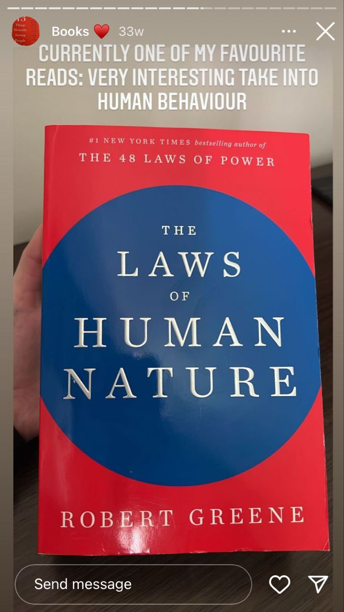

Library › Power & Strategy
The Laws of Human Nature — Summary & Key Lessons

Greene's magnum opus — 18 laws decoding why people do what they do, and how to see through the masks.
📖 OPEN THE FULL INTERACTIVE BREAKDOWN →🌐 Read it in Hindi, Hinglish, Gujarati, Tamil & 22 more languages — free, with audio.
💡 The Big Idea
After power, seduction, and war, Greene turns to the operating system underneath them all: human nature itself — the wiring evolution installed that runs us beneath awareness. The 18 laws map the forces: irrationality (emotion drives 'rational' decisions), narcissism (transform it into empathy), role-playing (everyone wears masks — read the true face beneath), compulsive behavior (character is destiny; people never do something 'just once'), covetousness (desire feeds on absence), shortsightedness, defensiveness, self-sabotage, repression (everyone has a shadow), envy (the hidden emotion that never announces itself), grandiosity, gender rigidity, aimlessness, conformity, fickleness, aggression, generational myopia, and death denial. Master purpose: see others clearly, see yourself honestly, and convert the study of human darkness into practical empathy and strategic advantage.
🧠 The 5 Key Lessons
Lesson 1: The Law of Irrationality: Master Your Emotional Self
Law 1
We believe we're rational; in truth, emotions drive decisions and reason arrives later as the press secretary, writing justifications for choices already made. Greene's anatomy of irrationality: low-grade (chronic biases — confirmation, conviction, appearance, group bias) and high-grade (triggered by inflaming factors: childhood trigger points pressed, sudden gains or losses, rising pressure, and 'infecting individuals' whose drama distorts everyone nearby). The Athenian antidote: become like Pericles — cultivate the inner Athena (deliberate reason) through practices: increase reaction TIME (never respond in the emotional moment; a day changes verdicts), accept irrationality in others as weather (stop resenting; start anticipating), and audit your own trigger points from childhood — the disproportionate reactions that reveal old wounds steering present choices.
📖 Example: Pericles anchors the law: for decades he steered Athens through faction fever and war hysteria by one discipline — retiring to deliberate before every decision while demagogues surfed the crowd's emotion. After his death, emotion took the wheel: the Sicilian… Read the full example →
⚡ Do this: Install the 24-hour rule on every charged decision and message. Then write your trigger inventory: the three situations that reliably produce disproportionate reactions in you — trace each to its earliest memory. Awareness converts the trigger from steering wheel to dashboard light.
Lesson 2: Narcissism, Empathy & Reading the Masks
Laws 2–3
Everyone sits on the narcissism spectrum — the healthy center is self-esteem stable enough to not need constant validation; DEEP narcissists (no stable inner core, insatiable attention-hunger, zero empathy, master manipulators via drama and victimhood) must be identified early and escaped, not fixed. The growth path runs opposite: convert self-absorption into the EMPATH'S toolkit — visceral empathy (absorb moods and nonverbals, not just words), analytic empathy (study their values, wounds, worldview), and the empathic feedback loop (test your readings, refine). Law 3 supplies the field manual: people present a polished second self — the mask — while the first self leaks through nonverbal channels: micro-expressions at unguarded moments, mixed signals (warm words, cold eyes), emphasis errors (protesting too much), and the reliable tell of ACTIONS over time. Watch people under stress, with subordinates, and when they think no one's watching: the mask needs an audience.
📖 Example: Greene's deep-narcissist case study is Stalin: the seductive charm phase (making visitors feel like the only person in the room), the victim narratives, the escalating need for adoration, and the empathy void revealed in casualties treated as arithmetic —… Read the full example →
⚡ Do this: Run the narcissist screen on any intense new relationship (love-bombing, victim sagas, empathy gaps, drama gravity) — and exit early if three lights blink. Daily empathy rep: in one conversation, put full attention on tone, eyes, and posture; form a hypothesis about their mood beneath the words; verify with a gentle question.
Lesson 3: Character Is Destiny: People Never Do It 'Just Once'
Law 4 (Compulsive Behavior)
Under pressure, people reveal — and repeat — their character: the deep patterning laid down by earliest attachments and reinforced by decades of habit. Greene's rule: NEVER believe someone's behavior was a one-off; the colleague who betrayed a confidence, the partner who exploded, the founder who cut corners — each will reproduce the pattern with the reliability of physics, because character is compulsion, not choice, until consciously reworked. The skill is reading character EARLY and through the right lenses: how people handle power (the truest X-ray — note who becomes cruel with waiters and subordinates), adversity (masks fall), partners' patterns (how they treat exes and old allies is your preview), and small daily actions (patience in queues, promises on trivia). Equally: audit your OWN pattern — the same relationship failing the same way, the same career wall — because your character is running you exactly as visibly, to everyone but you.
📖 Example: Greene's parade of repeat offenders: Howard Hughes' pattern — controlling, secretive, blame-shifting — identical across every decade, venture, and marriage, each partner certain THEY would be the exception; the general Xenophon trusted (against the visible… Read the full example →
⚡ Do this: For the three most important people in your professional life, write their pattern in one sentence each — based on repeated actions, not words or charm. Believe the sentence over the apology, every time. Then write YOUR sentence — ask two honest friends to edit it.
Lesson 4: The Shadow, Envy & Grandiosity: The Dark Trio
Laws 9–11
Three laws on what hides. THE SHADOW: socialization forced everyone to bury their darker traits — aggression, greed, weakness, rebellion — but the shadow leaks: in slips, in vehement denials (the puritan obsessed with others' sins), in projections (hating in others what's buried in us), and in midlife eruptions. Integrate yours consciously (channel aggression into ambition, rebellion into originality) or it acts through you unconsciously. ENVY: the one emotion nobody ever confesses — it converts instantly into something respectable (moral judgment, criticism 'for their own good,' sudden coldness after your success). Read the signals (micro-expressions at your good news, poisoned praise, backbiting patterns) and defuse preemptively: downplay wins, afford others attention, and be most careful with those closest in circumstance — envy needs proximity to burn. GRANDIOSITY: success inflates self-estimates until reality-testing dies (each win adds altitude; altitude removes friction; frictionless minds float into fantasy) — the antidote is practical: keep contact with the craft's details, welcome deflating feedback, and scale ambitions to actual energy and skills.
📖 Example: Envy's masterpiece case: Joseph Cassano — no; Greene's chosen study is the friendship of novelist Mary Shelley and Jane Williams, whose years of intimate 'devotion' ran alongside a quiet campaign of belittling gossip — envy wearing friendship's face so… Read the full example →
⚡ Do this: Shadow work: list three traits you judge most harshly in others — investigate each as a possible projection. Envy defense: identify your two highest-proximity peers; with them specifically, share wins modestly and give attention generously. Grandiosity check: after your next success, deliberately return to the smallest detail-level work of your craft for a day.
Lesson 5: Death Denial & the Sublime: The Final Law
Law 18 (Meditate on Our Common Mortality)
The last law reframes the entire book: our deepest compulsion is denying death — building busyness, distraction, and grandiosity as walls against the awareness of ending. Greene's inversion (via the Stoics and his own near-fatal stroke, suffered while writing this chapter): make death a companion instead of a repressed terror, and it becomes the great intensifier — the awareness of the deadline is what makes anything mean anything. The practice is the PARADOXICAL death meditation: visualize the shortness vividly, and let it do its work — burning off pettiness (grudges look absurd against the clock), dissolving separateness (mortality is the one club everyone belongs to — the root of real empathy), and converting time from an abstraction into the only currency. People who've brushed death report the same rebirth: colors sharper, trivia lighter, purpose louder. Greene's closing counsel: don't wait for the brush.
📖 Example: The law's living author: Greene suffered a severe stroke during this book's writing — and reports the chapter's thesis testing itself on him: the sudden, involuntary sorting of everything into essential and noise, the strange gratitude, the end of… Read the full example →
⚡ Do this: Practice the monthly memento mori hour: one walk with a single question — 'if this year were the last, what survives the cut?' Act on one answer within 48 hours. And use the mortality lens on one grudge this week: hold it against the clock, and watch what it weighs.
✅ 5-Step Action Plan
- 24-hour rule on charged decisions; map your three childhood triggers.
- Screen for deep narcissists; do one daily empathy rep with verification.
- Write one-sentence character patterns — theirs and yours; trust actions only.
- Run shadow, envy, and grandiosity audits on yourself quarterly.
- Monthly memento mori hour; let the deadline reorder the priorities.
💬 Best Quotes from The Laws of Human Nature
- “We are all in continual battle with our irrational nature.”
- “Never assume that the way people present themselves is who they are.”
- “Your character is destiny — the compulsive behavior people show early will repeat forever.”
Interactive version: mark lessons as read, listen in your language, share quote cards.